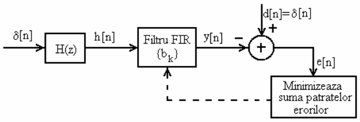

Proiectarea filtrului FIR invers
Laborator 4, PSS
1 Obiectiv
Proiectarea filtrelui FIR invers prin metoda celor mai mici pătrate
2 Noțiuni teoretice
Filtrul invers
Filtrul invers \(H_I(z)\) al unui filtru oarecare \(H(z)\) este sistemul care anulează efectul lui \(H(z)\) asupra unui semnal: \[H_I \lbrace H \lbrace x[n] \rbrace \rbrace \approx x[n]\]

O soluție directă este filtrul invers definit ca: \[H_I(z) = \frac{1}{H(z)}\]
Posibile probleme:
- \({H_I(z)}\) este instabil dacă \(H(z)\) are zerouri în afara cercului unitate
Soluție:
- Căutăm un filtru FIR care aproximează filtrul invers
- Fiind FIR, acesta este întotdeauna stabil \[H_I(z) = b_0 + b_1 z^{-1} + \dots + b_M z^{-N} \approx \frac{1}{H(z)}\]
Proiectarea filtrului FIR invers prin metoda celor mai mici pătrate
Dat fiind un filtru \(H(z)\) cu răspunsul la impuls \(h[n]\), filtrul FIR invers \(H_I(z) = b_0 + ... + b_Nz^{N}\) se obține rezolvând sistemul următor (similar cu cel de la metoda Prony):
\[ \begin{bmatrix} h[0] \\ 0 \\ \vdots \\ 0 \\ \end{bmatrix} = \begin{bmatrix} r_{hh}[0] & r_{hh}[-1] & \dots & r_{hh}[-N)] \\ r_{hh}[1] & r_{hh}[0] & \dots & r_{hh}[-N+1)] \\ \vdots & \dots & \dots & \vdots \\ r_{hh}[N] & r_{hh}[N-1] & \dots & r_{hh}[0] \\ \end{bmatrix} \begin{bmatrix} b_0 \\ b_1 \\ \vdots \\ b_N \\ \end{bmatrix} \]
Valorile \(r_{hh}\) sunt valorile funcției de autocorelație a semnalului \(x\).
Proiectarea filtrului FIR invers prin metoda Prony (variantă)
Vrem să proiectăm un filtru \(H_I(z)\) astfel încât: \[ \begin{aligned} H(z) \cdot H_I(z) &\approx 1 \\ \frac{1}{H_I(z)} &\approx H(z) \\ \frac{1}{b_0 + b_1 z^{-1} + \dots + b_Nz^{-N}} &\approx H(z) \\ \frac{1/b_0}{1 + b_1/b_0 z^{-1} + \dots + b_N/b_0 z^{-N}} &\approx H(z) \\ \end{aligned} \]
Relația de mai sus, trecută in domeniul timp: \[h_I[n] \approx \underbrace{h[n]}_{h_d[n]} \]
Vrem să proiectăm un filtru de forma \[\frac{1/b_0}{1 + b_1/b_0 z^{-1} + \dots + b_N/b_0 z^{-N}}\] a carui răspuns la impuls \(h_I[n]\) să aproximeze răspunsul la impuls al filtrului inițial, \(h[n]\).
Putem folosi în acest sens metoda Prony, cu gradul numărătorului \(0\) și gradul numitorului egal cu \(N\).
Rezolvare cu metoda Prony:
Proiectăm un filtrul \(\frac{b_0'}{1 + a_1' z^{-1} + \dots + a_N' z^{-N}}\) care să aproximeze răspunsul la impuls dorit = răspuns la impuls al filtrului inițial, \(h_d[n] = h[n]\)
După ce obținem coeficienții, simplificăm forțat fracția prin \(b_0'\) (coeficientul de la numărător)
Numitorul rezultat, \(1/b_0' + a_1'/b_0' z^{-1} + \dots + a_N'/b_0' z^{-M}\) este funcția de sistem a filtrului FIR invers obținut \[H_I(z) = 1/b_0' + a_1'/b_0' z^{-1} + \dots + a_N'/b_0' z^{-N} = b_0 + b_1 z^{-1} + \dots + b_Nz^{-N}\]
3 Exercițiu teoretic
- Folosiți metoda celor mai mici pătrate pentru a găsi filtrul FIR invers de ordinul 2 al filtrului următor: \[H(z) = 0.2 + 0.8 z^{-1} + 0.2 z^{-2}\]
4 Exerciiții practice
Rezolvați numeric în Matlab sistemul de ecuații aferent proiectării filtrului FIR invers de la exercițiul teoretic, folosind funcția
linsolve().Implementați în Matlab o funcție generală care să proiecteze filtrul FIR invers pentru orice ordin și orice răspuns la impuls \(h[n]\):
function b = firinvers(ordin, h) ... endFuncția va primi ca argumente:
ordin: ordinul filtrului dorithd: un vector cu răspunsul la impuls al filtrului original (cât mai lung)
Funcția va returna coeficienții funcției de sistem a filtrului proiectat (doar numărător, fiind FIR):
b: coeficienții de la numărător
Verificare: utilizați funcția de mai sus pentru a găsi filtrul FIR invers al filtrului de la exercițiul teoretic: \[H(z) = 0.2 + 0.8 z^{-1} + 0.2 z^{-2}\]
Observație: la filtrele FIR, răspunsul la impuls coincide cu coeficienții lui \(H(z)\).
Utilizați funcția de mai sus pentru a găsi filtrul FIR invers al filtrelor următoare: \[H_1(z) = \frac{1}{1 + 0.1 z^{-1} - 0.3 z^{-2}}\] \[H_2(z) = \frac{3}{1 + 0.1 z^{-1} - 0.3 z^{-2}}\]
Utilizați în prealabil
impz()pentru a genera un răspuns la impuls al acestor filtre suficient de lung (de ex. 100 eșantioane).Să se încarce un semnal audio în Matlab și să se filtreze cu H(z), apoi cu inversul acestuia. Cum e aude fiecare semnal?
5 Întrebări finale
- TBD